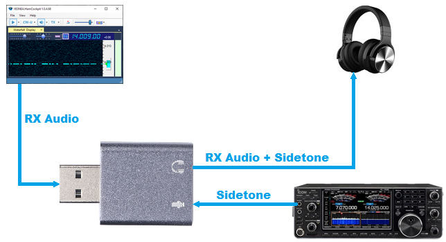
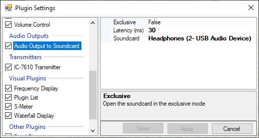
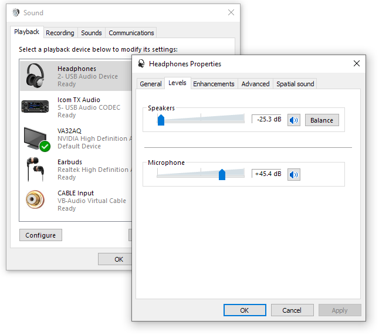

How to Add Sidetone to the Audio Processed in the Software
Digital signal processing of RX audio in the PC has many advantages, but it also presents a problem: the output does not include the sidetone. Sending Morse code without hearing the sidetone is virtually impossible, but fortunately, there is an easy solution: processed audio and sidetone can be mixed together in the soundcard.
1. Use a cheap soundcard dongle (a $1 one is OK!), connect the headphones to its output, and the sidetone to the Mic input:

The sidetone may come from the Morse keyer or, if the keyer is built into the radio, from the Phones connector of the radio (but not from the ACC connector). Make sure that only the sidetone is present and receiver audio is muted. How to achieve this is radio-dependent: for example, in TS-570 you can set the IF gain to the minimum, and in IC-7610 you just press the Main AF knob.
- Configure the software to use the dongle for audio output:

- Click on the Windows Start button, type "control panel" and click on Control Panel, then click on Soundcard. Select your soundcard and click on Properties. Click on the Levels tab in the Soundcard Properties dialog, enable both Speakers and Microphone, and adjust their levels for comfortable listening:

That's it! Now you can hear both audio from the PC and sidetone from your radio or Morse keyer.